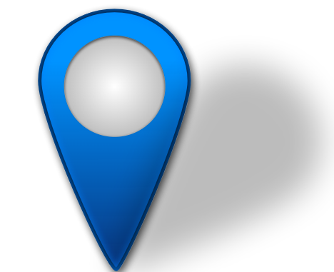

Peta
Peta Sebaran Pos Polisi dalam radius 1,5 km di Kota Bekasi
Skala 1:500.000

Pos_polisi
Rawan_Kecelakaan
Kota_Bekasi
Dosen: Hidayat Panuntun, S.T.,M.Eng.,D.Sc.
Dibuat oleh: Arvid Bennett Putra Malonda

Teknologi Survei dan Pemetaan Dasar
Universitas
Gadjah Mada